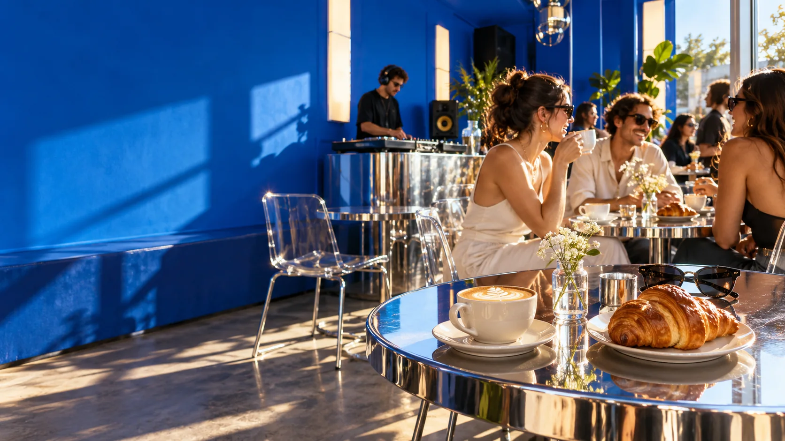
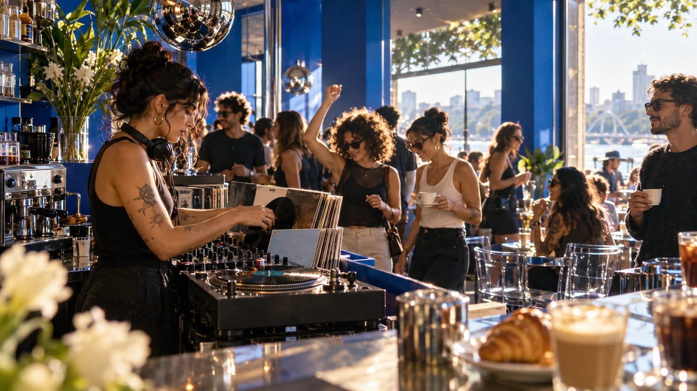

Come for
the coffee.
Stay for
the vibe.
Um café que vira ponto de encontro. Brunch no fim de semana, gente querida e, em algumas datas, música tomando conta do dia.
horários atualizados no Instagram

meets
good musicfim de semana XOX
Fim de semana
tem outro sabor.
A XOX abre aos sábados e domingos. E quando chega a Coffeeparty, café, DJs e encontros ocupam o mesmo espaço — sempre conforme a agenda do mês.
Acompanhar a próxima ediçãoSábado + domingo
Confira o horário atualizado antes de sair.
Coffeeparty
Datas especiais divulgadas no Instagram.
Encontre seu
próximo favorito.
Do primeiro espresso ao último pedaço de cheesecake. Explore, descubra e escolha sem sair do site.
O que você veio
curtir hoje?
Escolha seu plano e a gente te leva direto para a informação certa.

O dia ganha
trilha sonora.
As Coffeeparties acontecem em datas especiais, de acordo com a programação do mês. Siga a XOX para saber quando a próxima vai rolar.
Acompanhar a agendaA XOX fica no Floresta.
Rua Álvaro Chaves, 34 — Floresta, Porto Alegre. Consulte a rota e confira as informações mais recentes antes da visita.
Menu, novidades
e dias especiais.
O Instagram reúne os avisos da casa. O hub da bio também organiza os canais atuais da XOX.